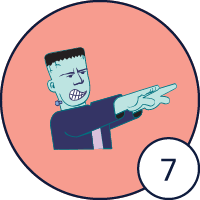
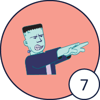
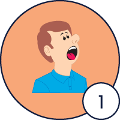
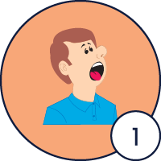

Steps of the method
-
Class routine
a. Give a brief explanation of the Educational Objective in Spanish.
Make sure you clearly explain the objective and the skills students are expected to develop in the lesson. This shouldn't take more than a few seconds.
-
Step 1. Go over the warm up activity.
Teach the sound(s) specified in the lesson.
-
a. Show the icon of the first sound and say it. Make sure all students are able to see how you articulate the sound.
-
b. Select a student and ask him/her to say the sound out loud.
-
c. Spell out the word provided for the sound taught so that the students learn to link the sounds. Select one student and have him/her join the sounds aloud as you gradually show them on the screen. Have the student say the word at least twice. It is not necessary to provide definitions.
-
d. Continue in the same fashion with the rest of the sounds specified in the lesson.
-
-
Step 2. Play the video of the lesson.
Have students watch the video of the new lesson and encourage them to pay close attention so they can visualize the objectives they need to reach.
-
Step 3. Introduce the new vocabulary and/or structures.
-
a. Select one student and have him/her join the sounds aloud as you gradually show them on the screen. Do not say the sounds. Finally, have the student say the word at least twice.
-
b. Explain the word using perception and production (using props, images, drawings, and/or acting) to teach vocabulary in a faster and easier way. The way you teach the word is the way you can trigger it later. Make sure the students understand the word.
-
c. Have one student demonstrate his/her understanding of the new word/expression by either asking the student for an example; using the new word in a sentence; providing a question or indication that guides the student to an example; or involving the student in a short situation where he/she demonstrates the correct usage of the new vocabulary. For example: Watch out for…! You may call on a second student if you consider the word/expression requires further practice for better understanding.
-
d. Continue in the same fashion with the rest of the words. Make sure you select a different student for each word.
-
-
Step 4. Play the video again.
Play the video and encourage students to identify the new words or structures as they are used in the context of the story.
-
Step 5. Repetition
-
a. Play the first clip of the video.
-
b. Reproduce the line just played in the clip while acting it out. Use 2 or 3 meaningful gestures per line.
-
c. Select one student and have him/her meaningfully reproduce the line acting it out. Follow the correction process.
-
d. Have two more students, one at a time, meaningfully reproduce the line acting it out. Follow the correction process. Make sure students participate evenly throughout the lesson.
-
e. Continue with each line in the above manner until all the content has been covered.
-
-
Step 6. Play the video again.
This is done so that students can organize and integrate all the ideas they have just learned and produced.
-
Step 7. Role-plays
Have all students participate in role-plays to achieve the objective of the lesson and apply their skills in a real-life context. Select two or three students at a time and have them get involved in either a role-play or a question/answer activity. All students must speak, regardless of how much they say.
This is your opportunity to get students involved in different scenarios where they will be able to communicate ideas similar to those in the lesson, but using their own personal characteristics.
Make sure they understand the objective and use the new words and structures learned in the lesson. See the role-plays or activities suggested in the "Role-plays” section for this step as part of your class preparation.
-
Step 8. Review the new vocabulary and structures contained in the lesson.
Check students’ understanding of all new vocabulary and structures, as well as their pronunciation, by using the same word triggers you employed during the vocabulary introduction. Call on one student at a time to respond aloud with the correct word or expression. If a student is unsure or provides an incorrect response, encourage peer correction by prompting another student to answer, and continue until the correct answer is given. Use the color chart as a reference tool to correct any pronunciation errors effectively.
This step helps students reinforce criteria and refresh their memory. It is the right moment to reinforce the contents of the lesson with students who had trouble role-playing or asking/answering questions. Props, images, mimics, and drawings may help you, too.
-
Step 9. Practice.
Each lesson has a different practice activity, and different procedure. Check the corresponding lesson to learn the correct procedure for the activity.


 
 


 
